Ejercicio 1 -
Visualización remota usando RDP o VNC
En este Ejercicio vamos a practicar cómo configurar una
máquina virtual Windows XP para poder acceder remotamente a
su escritorio desde el cliente RDP de un Windows 7. De igual forma,
practicaremos cómo configurar una máquina virtual
Debian 7 para poder acceder remotamente a su escritorio desde un
cliente de visualización VNC (que, en este caso,
también estará en nuestro Windows 7).
Sin embargo, antes de comenzar el ejercicio, y para evitar
desorientarnos con el montaje específico de esta
práctica, es necesario hacer un comentario previo acerca del
escenario planteado: conforme vayamos realizando el ejercicio va a
resultar evidente que, tal como está planteado en el
guión, el acceso que se propone al escritorio remoto es
redundante, porque la máquina virtual accedida
está corriendo en el Workstation del propio Windows 7 en el
que estamos trabajando, y por tanto podríamos acceder
directamente al escritorio del Windows XP (o del Debian 7) sin
necesidad de complicarnos la vida con accesos por red.
La razón de plantear de esta forma el ejercicio es que
estamos usando una única máquina
física (nuestro Windows 7) para reproducir un escenario que,
en la vida real, involucraría a dos máquinas
físicas distintas:
Un servidor de virtualización
(típicamente un hipervisor ESX), en el que corre la
máquina virtual que ofrece el escritorio remoto.
El puesto de trabajo físico del usuario, en el
que se ejecutará la aplicación cliente de
visualización.
En nuestro caso, para simplificar el montaje de la práctica,
y permitir que cada alumno tenga un puesto de trabajo
autónomo, simularemos este escenario en nuestro Windows 7 de
la siguiente forma:
La máquina virtual Windows XP (o Debian 7) que
correrá en el VMware Workstation representará la
máquina virtual que (en la realidad) estaría
corriendo en un servidor de virtualización
físicamente independiente.
El propio Windows 7, y la aplicación de
visualización RDP o VNC que en él ejecutaremos,
representa el puesto de trabajo de un usuario que, desde su ordenador
local, necesita para trabajar conectarse al escritorio remoto de una
máquina virtual.
Una vez hechos estos comentarios podemos comenzar con el ejercicio;
para realizarlo, seguimos estos pasos:
1)
Comenzaremos creando un clon enlazado de la máquina XP Curso FP, usando
como base su instantánea Inicial. Para ello,
usar el menú VM
-> Manage -> Clone, y seguir el
procedimiento de creación de un clon enlazado que ya vimos
en el Ejercicio 2 de la Práctica 3; usar como nombre de
máquina XP_RDP,
y crearla en el directorio D:\practicas\MV\XP_RDP.
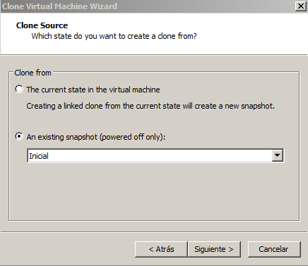
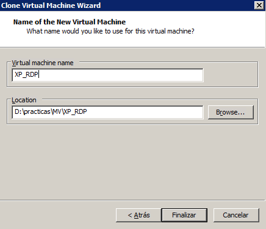
2) En VMware
Workstation, cerrar el Tab de la máquina virtual XP Curso FP, y
arrancar la máquina XP_RDP.
Por razones obvias de seguridad, el acceso remoto al escritorio del XP
requiere autentificarse con un nombre de usuario y una
contraseña. La máquina XP que estamos empleando
como base tiene creado un usuario (pablo,
Administrador de equipo) pero, por comodidad, hasta ahora
carecía de contraseña (Nota: obviamente en todas estas
prácticas hemos supuesto que trabajamos en una red segura,
interna y no expuesta a Internet, por lo que no hemos hecho
énfasis en el uso de configuraciones seguras).
Lo primero que necesitaremos hacer, para poder configurar el acceso al
escritorio remoto, es crear una contraseña para este usuario.
3) Abrir Inicio -> Panel de control
-> Cuentas de Usuario. Seleccionar el usuario pablo y pulsar Crear una contraseña.
Usar como contraseña la ya habitual (deii15). Pulsar No a la pregunta de
si desea que sus archivos o carpetas sean privados.
4) Ahora,
habilitamos el acceso al escritorio remoto. Cerrar el Panel de Control,
pusar con el botón derecho sobre Mi PC, y abrir el
menú Propiedades.
5) Pulsar
sobre la pestaña Remoto,
y marcar la opción Permitir
que los usuarios se conecten de manera remota a este equipo.
Como el usuario pablo
pertenece al grupo Administradores,
ya tiene acceso por defecto, por lo que no es necesario
añadirlo explícitamente a la lista de usuarios
remotos; sin embargo, podemos comprobar ésto pulsando sobre
el botón Seleccionar
usuarios remotos, como se muestra en la figura, tras lo
cual pulsamos Aceptar
hasta cerrar todas las ventanas.
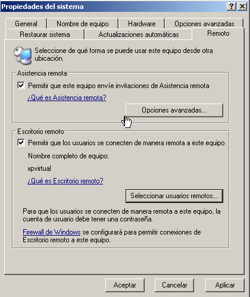
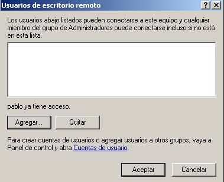
Con la configuración actual, la máquina XP_RDP
recibe su dirección IP por DHCP. Sin embargo esta
máquina
está ofreciendo por la red un servicio (el acceso a su
escritorio remoto), por lo que, en un entorno de producción,
podríamos tener problemas si su dirección IP
cambia de un
arranque al siguiente. Por ello, usaremos una configuración
más estable asignándole una dirección
IP
estática.
6) Usando Configuración
-> Conexiones de red, abrir las propiedades de Conexión de
área local 2 y asignarle la
dirección IP estática 10.0.0.25/255.255.255.0,
como muestra la figura. Aplicar, y comprobar con ipconfig, que la
máquina haya tomado la nueva dirección.
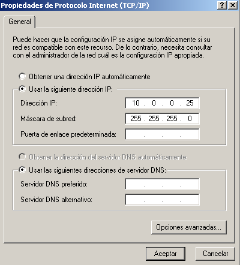
7) Dejamos
andando la máquina XP_RDP,
pero minimizamos su ventana para volver al escritorio del Windows 7.
Vamos a invocar la ejecución del cliente de
visualización
RDP (llamado Microsoft
Terminal Services Client). Para ello, en el
menú Inicio
ejecutamos el comando mstsc.exe
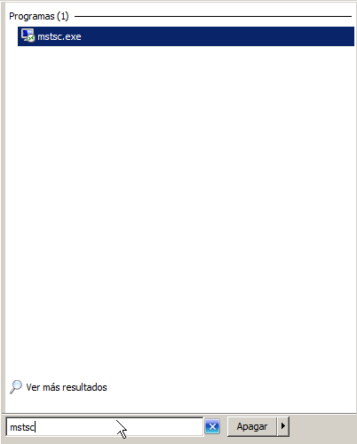
8)
Aparecerá una
ventana, en la que podemos introducir la dirección IP (o
nombre
DNS) de la máquina que ofrece el escritorio remoto (en este
caso, 10.0.0.25). Sin embargo, podemos ver también que, como
todavía no nos hemos conectado nunca a esa
máquina, no
hay ningún usuario especificado.
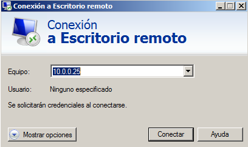
9) Esto no
supone ningún problema, ya que al establecer la
conexión se nos presentará una ventana de prompt
requiriendo la introducción de nombre de usuario y password.
Sin embargo, si queremos tener un mayor control de las opciones de
conexión antes de establecerla, podemos pulsar el
botón Mostrar
opciones. En la primera pestaña, General, podemos
especificar que se utilice directamente
el usuaro pablo
ya en el intento inicial de conexión.
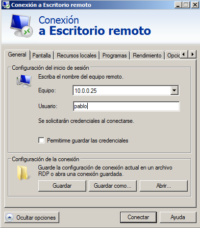
10) Las
opciones de la pestaña Pantalla
nos permiten cambiar el tamaño del escritorio remoto, y el
número de bits de color por cada pixel de escritorio remoto.
Si tuviéramos que conectarnos, por ejemplo, a
través de un enlace ADSL de baja velocidad,
podríamos tener que usar estas opciones para conseguir una
respuesta suficientemente rápida del escritorio remoto, a
costa de perder calidad. Sin embargo, en general el protocolo RDP es
bastante eficiente, y en nuestro caso particular (con una
conexión totalmente local) no habrá problemas de
rendimiento, así que dejamos la pestaña sin tocar.
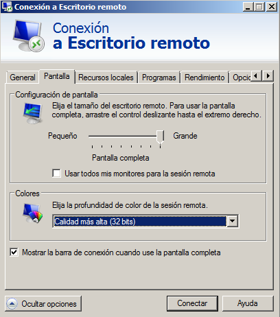
11)
Análogamente, una vez que hemos elegido tamaño de
pantalla y calidad del color, la pestaña Rendimiento nos
permite activar o desactivar diversos efectos de
visualización para mejorar la respuesta del escritorio
remoto cuando nos conectamos a través de líneas
de baja velocidad. Si queremos tener control total sobre estas opciones
podemos especificar manualmente la velocidad de la línea, y
elegir manualmente las opciones activas. Sin embargo, en la
mayoría de los casos la detección
automática de la calidad de conexión funciona
suficientemente bien, por lo que dejaremos sin tocar esta
pestaña.
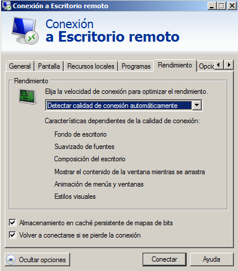
12)
Finalmente la pestaña Recursos
locales es la que nos permite (además de
habilitar el uso del audio local para reproducir el audio remoto)
habilitar el que una unidad de disco de nuestro ordenador local pueda
ser usada como unidad local también por el ordenador remoto.
Esto se consigue pulsando el botón Más en Dispositivos y recursos locales;
si hacemos click sobre el +
de Unidades,
vemos que podemos compartir con la máquina remota el disco
C, la unidad de DVD o, por ejemplo, un disco USB que tengamos conectado
al ordenador local. En nuestro caso no queremos compartir nada con la
máquina remota, así que no marcamos ninguna
opción, y pulsamos Cancelar.
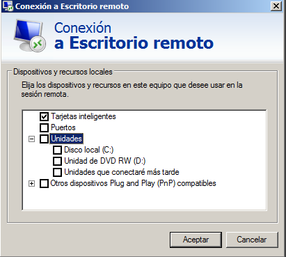
13) En la
opción Dispositivos
y recursos locales vemos que, por defecto, está
marcada la opción Portapapeles.
Esto significa que la aplicación de escritorio remoto nos
permitirá copiar y pegar ficheros entre máquina
local y máquina remota, y la transferencia de los ficheros
se hará automáticamente a través de la
conexión de red (NOTA: esta opción
sólo funciona si la máquina remota es Windows 7 o
superior). Dejamos la opción marcada, sin hacer ninguna
acción más.
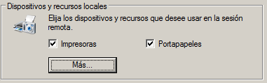
(NOTA IMPORTANTE:
El exportar unidades de disco a una máquina remota, o el
permitir la copia de ficheros vía Portapapeles, son agujeros
de seguridad importantes y obvios. Adicionalmente, la
aplicación de Terminal Services recordará de una
ejecución a la siguiente las opciones de
compartición, por lo que es fácil exportar una
unidad de disco, olvidarse de desconectar la opción, y
exportarla accidentalmente en una conexión posterior. Por
ello, debe siempre considerarse cuidadósamente la necesidad
o no de realizar este tipo de comparticiones de recursos).
14) Una vez
elegidas las opciones de conexión adecuadas, pulsamos Conectar. Como nos
estamos conectando a un equipo XP (que tiene mecanismos de
autentificación más antiguos que los de Windows
7) aparecerá un mensaje de advertencia. Marcar que no vuelva
a notificar, y pulsar Sí.
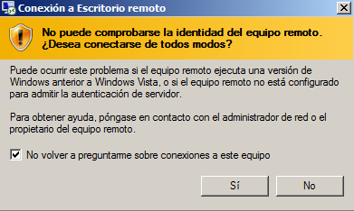
15)
Aparecerá un prompt, pidiendo la contraseña del
usuario pablo.
Usar la contraseña que le dimos antes en el XP (deii15).
16) Una vez
completa la conexión se abrirá en pantalla la
visualización del escritorio remoto del XP. Podemos darnos
cuenta de que estamos accediendo al escritorio remotamente gracias a
dos detalles:
La barra superior, que nos muestra la dirección
IP de la máquina remota.
Los bordes serrados del ícono Mi PC y de la
papelera de reciclaje, que nos indican que la conexión
remota disminuye la calidad de los gráficos para mantener
ágil la respuesta del escritorio remoto.
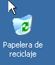
17) Pulsamos
Mi PC para
abrir un explorador de Windows; vemos que, aparentemente, podemos usar
la máquina remota exactamente igual que si fuera la real.
18) Sin
embargo, si pulsamos en el botón Inicio observaremos
una diferencia: en lugar de la opción Apagar, tan
sólo nos aparece una opción Desconectar; de esta
forma se evita que accidentalmente apaguemos por error la
máquina remota.
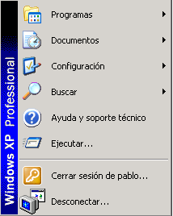
19) Podemos
observar también el efecto que el abrir esta
conexión ha tenido en la terminal de la máquina
"real" (en este caso, la máquina virtual en el Workstation).
Para ello, minimizamos (NO
cerramos) la aplicación de escritorio remoto y, en el
Windows 7, pulsamos sobre la instancia de VMware Workstation en la que
está corriendo la máquina XP_RDP.
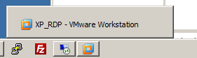
20) Como
vemos, se nos pide la contraseña del usuario pablo para entrar;
ésto nos indica que hay otro usuario ocupando la terminal de
la máquina (la terminal gráfica de un Windows XP
no puede soportar más que a un único usuario
simultáneo). Hacemos login, introduciendo la
contraseña del usuario.
21) Si ahora
minimizamos el Workstation y volvemos a la aplicación de
Escritorio Remoto, recibimos un mensaje avisándonos de que
se ha cerrado la conexión que teníamos activa. La
razón, obviamente, es que al haber hecho login en la
terminal de la máquina "real" (en el Workstation) la
terminal usada por el escritorio remoto debe necesariamente cerrarse,
ya que sólo puede haber una abierta en cada momento.
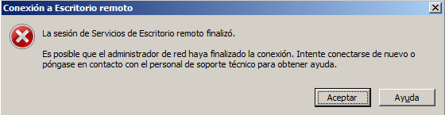
Vamos a ver, finalmente, cómo podemos apagar la
máquina remota, caso de que realmente queramos apagar la
máquina virtual, y no simplemente dejarla corriendo en el
hipervisor.
22) Primero
nos volvemos a conectar vía escritorio remoto, usando el
usuario pablo.
23) Una vez
completado el login, pulsamos Alt
+ F4. Aparecerá la ventana con las
típicas opciones para apagar o reiniciar la
máquina. Pulsamos Apagar,
y confirmamos la acción en el aviso subsiguiente.
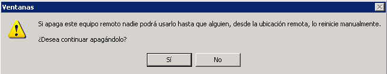
24) La
conexión de Escritorio Remoto se cerrará; si nos
vamos entonces al VMware Workstation comprobaremos que, en efecto, la
máquina virtual XP_RDP
se ha apagado.
Una vez visto el acceso a un Windows XP remoto usando el cliente de
Terminal Services, vamos ahora a ver cómo podemos hacer algo
similar para acceder a un escritorio remoto Linux, usando el protocolo
VNC.
Para ello vamos a aprovechar la máquina virtual Debian7-1 que
creamos, usando un clon enlazado, en el Ejercicio 2 de la
Práctica 3; habilitamos en esta máquina el
protocolo VNC:
25) Ir al
directorio C:\MV\Debian7-1,
y hacer doble click sobre Debian7-1.vmx
para abrir la máquina en el Workstation.
26) Arrancar
Debian7-1,
y hacer login como usuario Curso
FP.
Esta máquina va a estar ofreciendo un servicio de escritorio
remoto a una máquina remota, que necesitará
conocer su dirección IP. Por tanto, al igual que hicimos con
el XP_RDP, vamos a cambiar su configuración de red para
asignarle una IP estática.
La versión 7 de Debian introduce un nuevo mecanismo de
gestión de la activación y
configuración de los interfaces de red, llamado Network Manager.
Como suele ser habitual, este cambio ha modificado también
todos los ficheros de configuración, de forma que ahora la
configuración del interfaz eth0
está en /etc/NetworkManager/system-connections/Wired
connection 1.
Dado que ahora sí tenemos un interfaz gráfico con
el que trabajar, vamos a usar la herramienta gráfica del
sistema para cambiar la dirección IP, en lugar de modificar
manualmente los ficheros de configuración.
27) Abrir Aplicaciones ->
Herramientas del sistema -> Administración ->
Herramientas de red.
28)
Seleccionar eth0
como Dispositivo de red
y pulsar Configurar.
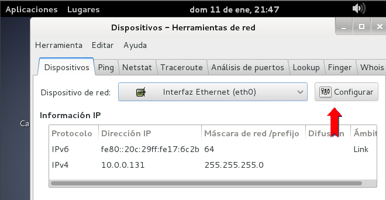
29)
Seleccionar Wired
connection 1, y pulsar Editar.
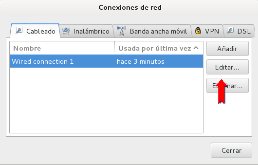
30) En los
ajustes de IPv4,
introducir los valores de la figura
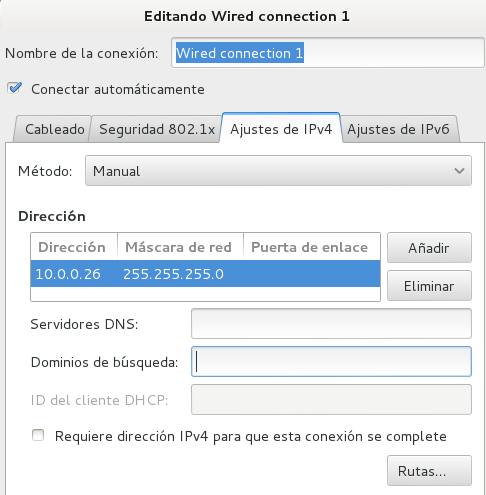
31)
Reiniciar la máquina, hacer login como usuario Curso FP y abrir
una terminal, ejecutar /sbin/ifconfig,
y comprobar que la máquina ha tomado la nueva
dirección IP, pese a que el usuario Curso FP no tiene
privilegios de root (!!!!).
32) Ahora,
habilitamos el acceso al escritorio remoto. Para ello, usamos el
menú Aplicaciones
-> Herramientas del sistema -> Preferencias ->
Compartición del escritorio. Seleccionar Permitir a otros usuarios ver mi
escritorio. Como estamos suponiendo un sistema con
seguridad relajada, al que sólo nosotros tendremos acceso
(por estar en una red host-only), no marcaremos la opción de
pedir contraseña (pero ésto, obviamente,
sería un agujero de seguridad importante en un sistema de
producción real).
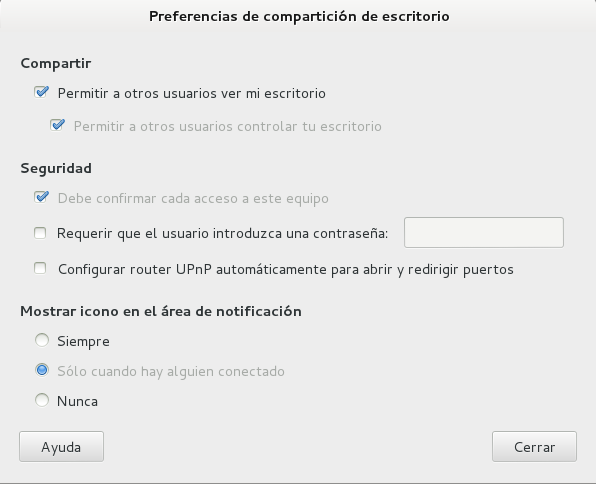
33) Pulsamos
Cerrar, y
minimizamos el VMware Workstation.
34) Ahora,
en el Windows 7, ejecutamos la aplicación VNC-Viewer-5.2.1,
que encontraremos en el escritorio.
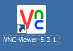
35)
En la ventana de conexión especificamos la dirección 10.0.0.26 del servidor Debian, y dejamos automática la elección del cifrado. Pulsar Conectarse.
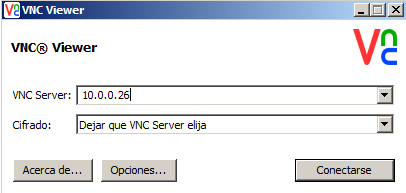
36) Aparecerá un aviso indicando que la conexión VNC no está cifrada. Pulsar Continuar.
37) Ir ahora al servidor Debian7-1. Veremos que aparece un aviso, pidiendo confirmación a la conexión. Pulsar Permitir.
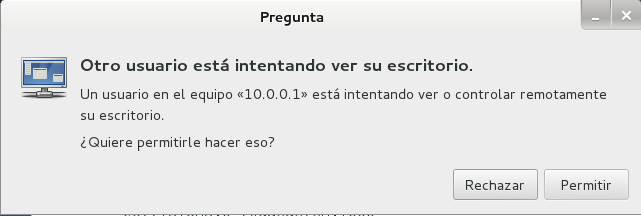
Al completarse la conexión vemos que, en la ventana del
visualizador VNC, nos aparece una visualización del escritorio
del Debian 7. También podemos observar que el cursor tiene una
forma distinta, que nos permite distinguir que estamos en una terminal
VNC y no en el escritorio real. Adicionalmente, si llevamos el cursor
al margen superior de la ventana veremos aparecer un menú de
opciones, que nos permite poner la aplicación en pantalla
completa, mandar un Ctrl-Alt-Del a la máquina remota, o configurar opciones de conexión.
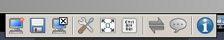
38) Ahora, desde la ventana VNC, usar en el Debian 7 el menú Curso FP -> Apagar
para apagar el servidor. Como vemos, en este caso no existe ninguna
protección que impida realizar esta acción por accidente
(lo que implica, obviamente, que se debe estar más atento a lo
que se hace que en el caso de la conexión RDP a un escritorio
Windows).